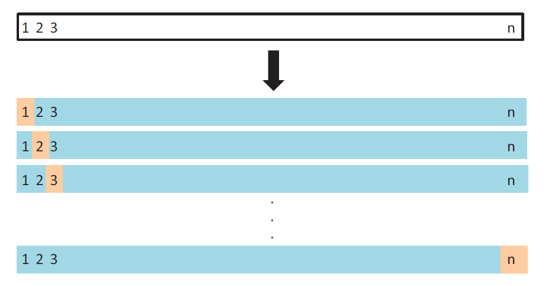
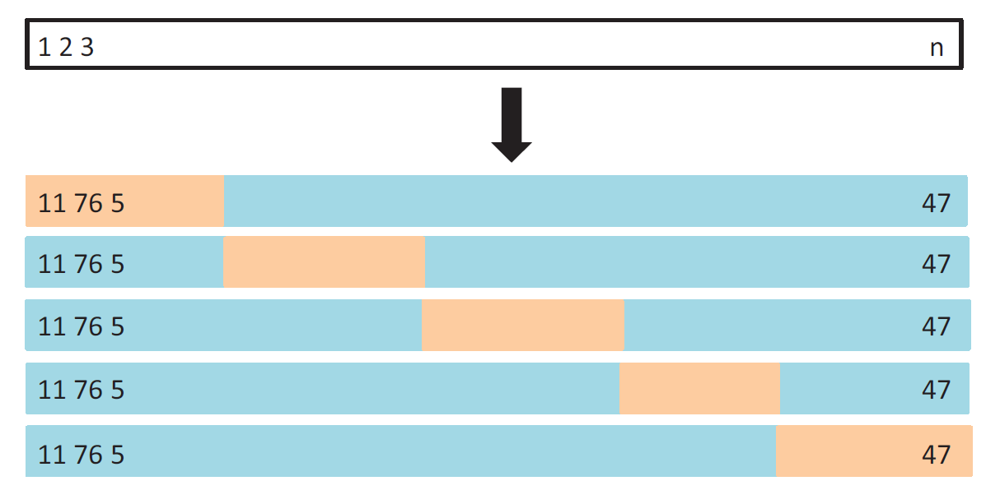

5 Cross-Validation
5.1 The Machine Learning Process
For the next 2-3 class periods, we are going to discuss the overall ML process. Note that, the procedures we will discuss are not ML models, rather the models go through this process to obtain the best (optimal) predictive model.
Identify the task.
Split the data into (typically) training and test datasets.
Perform EDA (Exploratory Data Analysis) on the training set.
Perform feature engineering.
Perform CV for hyperparameter tuning and model selection. Choose the optimal model.
Create the final model using the overall training data and estimate its performance on the test data.
5.2 Data Splitting
Available data split into training and test datasets.
Training set: these data are used to develop feature sets, train our algorithms, tune hyperparameters, compare models, and all of the other activities required to choose an optimal model.
Test set: having chosen a final optimal model, these data are used to obtain an unbiased estimate of the model’s performance.
It is critical that the test set not be used prior to selecting your final model.
Assessing results on the test set prior to final model selection biases the model selection process since the testing data will have become part of the model development process.
5.3 Resampling Methods
Idea: Repeatedly draw samples from the training data and refit a model on each sample, and evaluate its performance on the other parts.
Objective: To obtain additional information about the fitted model.
Cross-Validation (CV) is probably the most widely used resampling method. It is a general approach that can be applied to almost any statistical learning method.
5.4 Cross-Validation (CV)
Used for
model selection: select the optimum level of flexibility (tune hyperparameters) or compare different models to choose the best one
model assessment: evaluate the performance of a model (estimate the error and variability)
We will talk about
Leave-One-Out Cross-Validation (LOOCV)
\(k\)-Fold Cross-Validation
5.5 Leave-One-Out Cross-Validation (LOOCV)
5.6 Your Turn!!!
Suppose you implement LOOCV on a dataset with \(n=100\) observations.
What is the size (number of observations) of each training set?
What is the size of each validation set?
How many steps/iterations are required to complete the overall LOOCV process?
5.7 Leave-One-Out Cross-Validation (LOOCV)
Advantages
- LOOCV will give approximately unbiased estimates of the test error, since each training set contains \(n−1\) observations, which is almost as many as the number of observations in the full training dataset.
- Performing LOOCV multiple times will always yield the same results.
Disadvantages
Can be potentially expensive to implement, specially for large \(n\).
LOOCV error estimate can have high variance.
5.8 \(k\)-Fold Cross-Validation
Randomly divide the training data into \(k\) groups or folds (approximately equal size).
Consider one of these folds as the validation set. Fit the model on the remaining \(k-1\) folds combined, and obtain predictions for the \(k^{th}\) fold. Repeat for all \(k\) folds.

5.9 Your Turn!!!
Suppose you implement 10-fold CV on a dataset with \(n=100\) observations.
What is the size (number of observations) of each training set?
What is the size of each validation set?
How many steps/iterations are required to complete the overall CV process?
5.10 Bias-Variance Trade-off for LOOCV and \(k\)-fold CV
- LOOCV has very less bias. Using \(k=5\) or \(10\) yields more bias than LOOCV.
For LOOCV, the error estimates for each fold are highly (positively) correlated. \(k\)-fold CV error estimates are somewhat less correlated. LOOCV error estimate has higher variance than \(k\)-fold CV error estimate.
Typically, \(k=5\) or \(10\) is chosen.